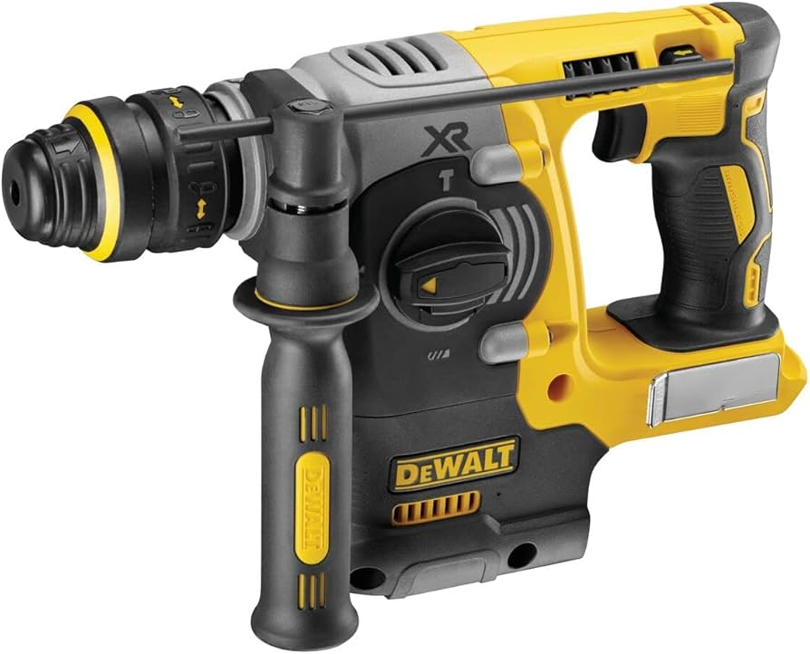
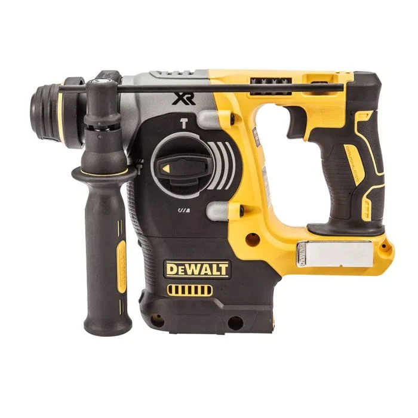
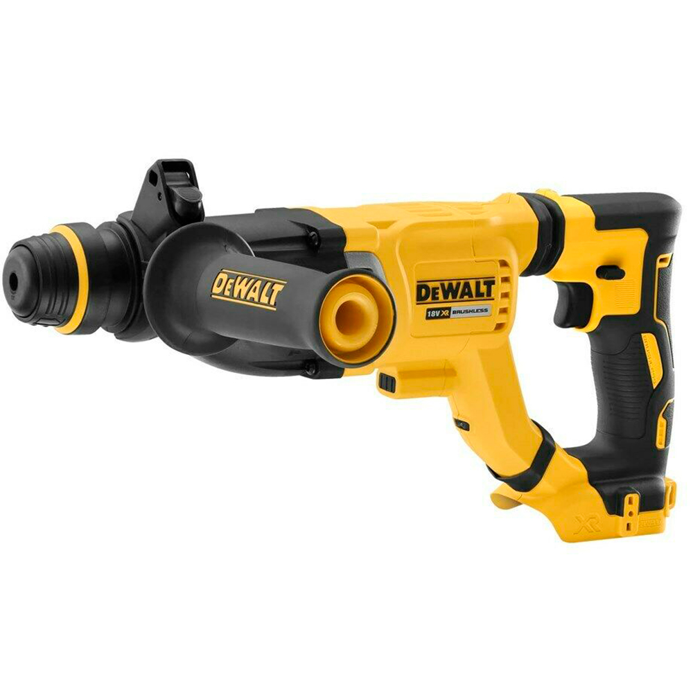

SDS Hammer Drills Comparison
 |
 |
 |  |  |  |
 |
 |
 |
|
| Model | DCH283N | DCH275P2 | DCH274N | DCH273N | DCH263N | DCH253N | DCH172N | DCH133N | DCH033N |
| Voltage (V) | 18 | 18 | 18 | 18 | 18 | 18 | 18 | 18 | 18 |
| Description | Compact, lightweight and ergonomic | Compact, lightweight and ergonomic | Ergonomic design | Improved comfort | Powerful, fast drilling | Ideal for drilling fixing holes in heavy duty materials | Lightweight ultra compact | lightweight and ergonomic | Compact and ergonomic |
| Motor | Brushless | Brushless | Brushless | Brushless | Brushless | Brushed | Brushless | Brushless | Brushless |
| Modes | 3 modes | 3 modes | 3 modes | 3 modes | 3 modes | 3 modes | 2 modes | 3 modes | 3 modes |
| Revolutions Per Minute (RPM) | 0-980 | 0-1100 | 0-1100 | 0-1100 | 0-1165 | 0-1200 | 0-1060 | 0-1500 | 0-1500 |
| Max Drilling Capacity - Metal (mm) | 13 | 13 | 13 | 13 | 13 | 13 | 10 | 13 | 13 |
| Vibration Measurement - Chiseling (m/s²) | 8.5 | 5.4 | 5.4 | 5.4 | 7.7 | 5.4 | Not applicable | 14.7 | 14.7 |
| Vibration Measurement - Drilling (m/s²) | 8.5 | 6.6 | 6.6 | 6.6 | 9.1 | 6.6 | 8.8 | 16.9 | 16.9 |
| Length (Mm) | 364 | 448 | 328 | 301 | 404 | 301 | 265 | 383 | 383 |
| Weight (Kg) | 3.6 | 4.1 | 2.7 | 2.5 | 2.7 | 2.5 | 1.8 | 2.3 | 2.3 |
| Perform & Protect | Yes | Yes | Yes | Yes | Yes | Yes | No | No | No |
| LED Light | Yes | Yes | Yes | Yes | Yes | Yes | Yes | No | No |
Understanding SDS Hammer Drill Specifications
Max Drilling Capacity – Metal (mm)
This specification indicates the largest diameter of metal the tool can effectively drill using a recommended twist drill bit. Staying within this limit ensures the motor runs efficiently, prevents stalling, and extends bit life, making it easier to match the tool to your project’s material requirements.
Vibration Measurement – Chiseling (m/s²)
This value reflects the level of vibration transmitted to the user’s hands during chiseling operations. Lower vibration levels reduce operator fatigue and increase comfort, allowing for safer, longer periods of work, especially when breaking or shaping masonry and other dense materials.
Vibration Measurement – Drilling (m/s²)
Similar to chiseling, this figure measures the hand-arm vibration experienced during hammer or standard drilling into materials like concrete or masonry. Tools with lower vibration ratings provide better control, accuracy, and reduce the risk of long-term strain injuries.
Revolutions Per Minute (RPM)
RPM represents the speed at which the drill chuck or tool spindle rotates. Higher RPM values allow faster cutting in softer materials, while variable speed control enables precision drilling and cleaner holes in tougher materials, giving the operator flexibility to adapt to different applications.